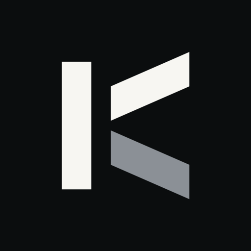
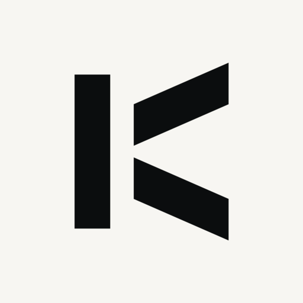
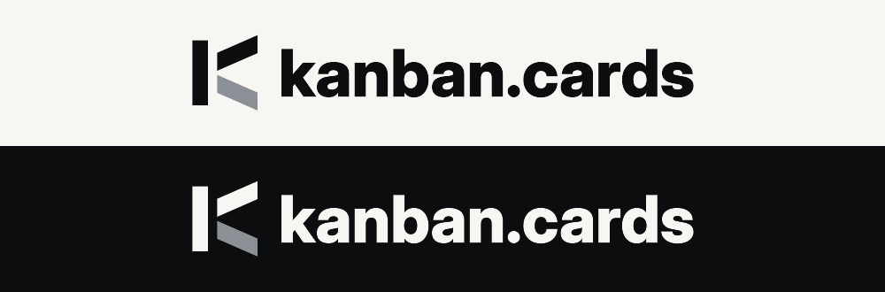
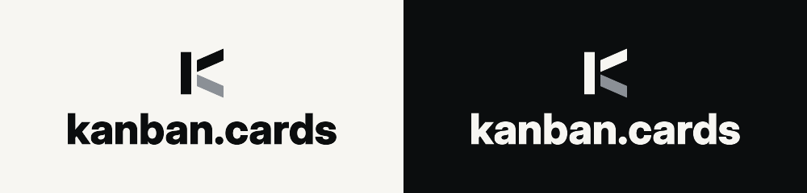
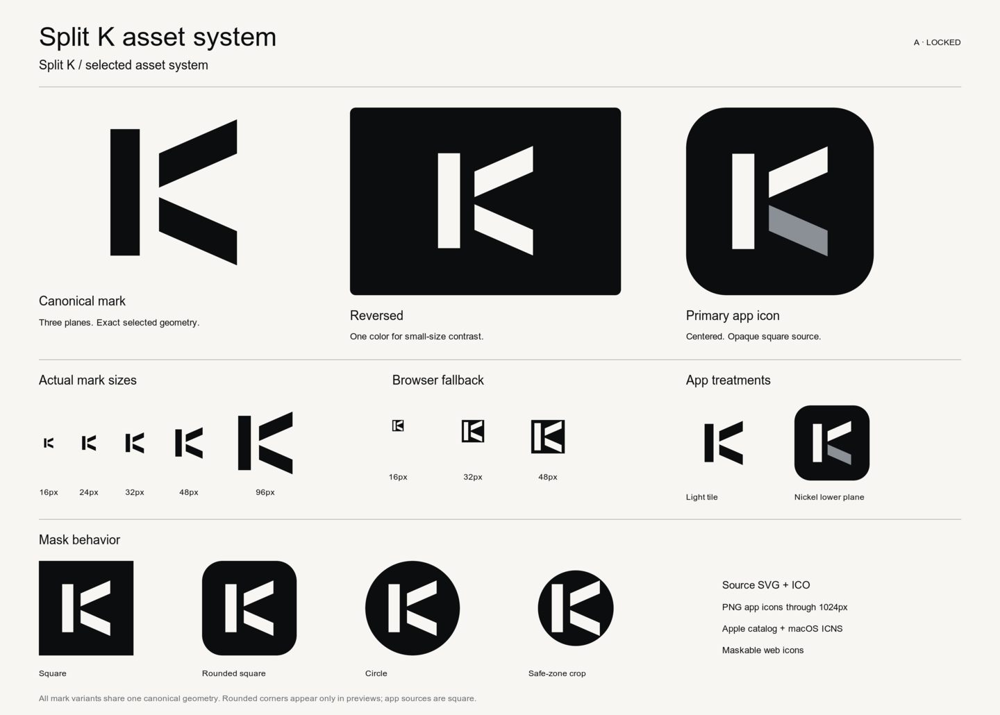

Canonical mark
Three solid planes, with the selected proportions and open gaps.
Split K. The selected mark, refined into a consistent SVG, favicon, and app icon system.
Three solid planes, with the selected proportions and open gaps.
One color for contrast on dark surfaces.

Centered ivory and nickel on ink. Platform rounding is shown as a preview.
View at 100% zoom. All exports use the same mark geometry.
Horizontal SVG · Stacked SVG. Inter 780, optical size 32. The 60px mark, 38px cap height and 20px ink gap stay consistent in both themes. The wordmark renders without installed fonts.

Nickel is the primary treatment. Monochrome alternatives remain available for one-color use.
The full K stays inside the maskable safe zone, including its angled ends.


